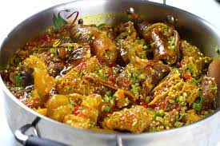

Ela ati ogbono

Description
This a sumptuous dish common amongst the south western people of nigeria
its known for its spicy, slimy and yet mind blowing interaction with the taste buds
Ingriedents
- 1 litre palm oil
- okra(sized quantity)
- ogbono
- water
- meat
- kpomo
- seasoning
- salt
- pepper
- iru
- vegetable(ugwu leaf)
- okporoko(also called maureen's fish)
- crayfish and smoked fish
steps
- Measure a reasonable quantity of water and heat until it begins to boil
- Add some palm oil, make sure the oil forms a thin layer of film over the surface of the boiling water
- slice your okra and vegetables, but add only the sliced okra first and don't stir
- leave mixture to boil for some time, then add your okporoko,kpomo,crayfish,smoked fish. add a reasonable quantity of salt
which is dependent on the individual and the prefered seasoning. then leave to boil
- lastly, add the vegetable and leave to steam for a while and voila, bon apetit!!